This technical demonstration document showcases the verified implementation, production deployment, and operational workflows of the SafeHer platform across its tri-portal architecture: Public Citizen Web, Law Enforcement Dispatch, and Administrative Safety Operations Center.
Conventional personal safety mobile applications suffer from critical architectural bottlenecks that limit their real-world efficacy:
Multi-modal trigger mechanisms (3s hold, emergency widget, voice detection, shake gestures) with automatic GPS telemetry streaming.
Automated 1–5 km Haversine dispatch radius matching on-duty field officers with atomic assignment locking and sub-second broadcast.
Role-isolated interfaces for civilians, sworn law enforcement officers, and administrative security auditors with zero cross-privilege leak.
| Feature Capability | Traditional Safety Apps | Government Hotlines (112) | SafeHer Architecture |
|---|---|---|---|
| Distress Signaling | Manual SMS to family contacts | Voice telephony dispatch | Direct Multi-Tier (Family SMS + Proximity Police Dispatch) |
| Officer Dispatch Mechanism | None (Not integrated) | Verbal radio broadcast | Automated Proximity Push (1–5km Haversine Ring) |
| Field Officer Mobile UX | None | Custom terminal / In-vehicle radio | Integrated Mobile & Web Law Enforcement Console |
| Live GPS Tracking | Static snapshot or third-party link | Carrier cellular triangulation | 15s Continuous Breadcrumb Streaming with Zero-Auth Web Link |
| Crime Analytics Pipeline | Static quarterly reports | Internal precinct database | Crowdsourced + Admin-Verified Heatmap & Locality Safety Index |
| Role-Based Access Control | Single user level | Department silo | Tri-Portal Authorization (Civilian, Police, Operations Admin) |
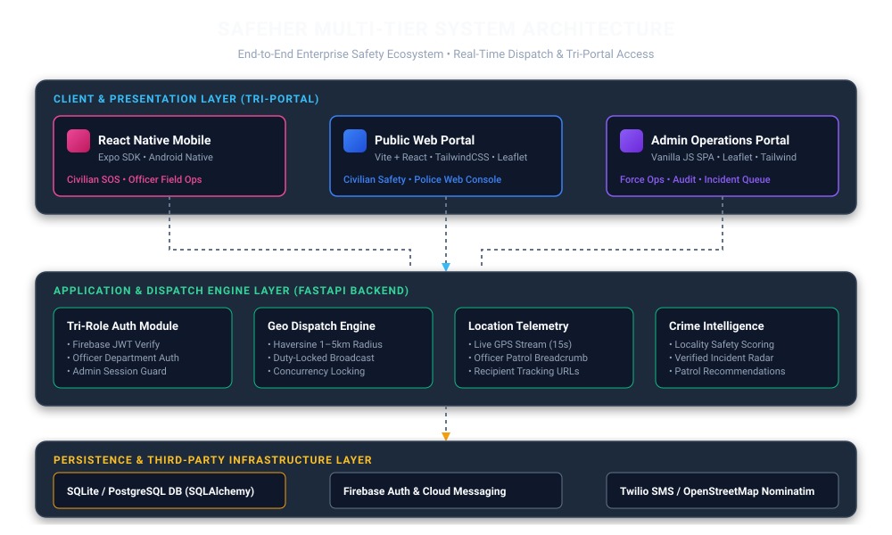
React Native Mobile Client: Cross-platform Expo application deployed on Android. Provides civilian SOS triggers, background sensors, and an authenticated Law Enforcement Field Ops interface.
Public Web Portal (Vite + React): Modern civilian portal with hold-to-SOS, guardian manager, crime radar, and zero-auth live tracking.
Admin Safety Operations Center: High-density administrative single-page console for incident command and force management.
FastAPI Microservices: High-performance asynchronous Python REST engine executing sub-350ms dispatch cycles.
Haversine Proximity Filter: Real-time spatial query isolating on-duty officers within configurable radius.
Concurrency Mutex: Atomic database locking preventing dual-officer dispatch race conditions.
Security Middleware: JWT role enforcement distinguishing civilian, police, and administrator scopes.
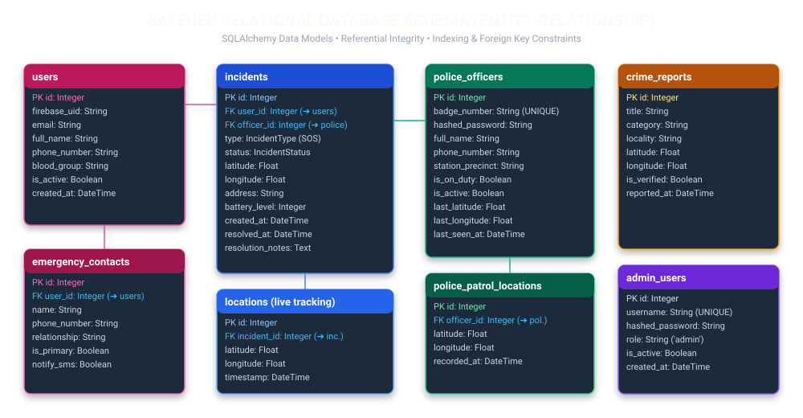
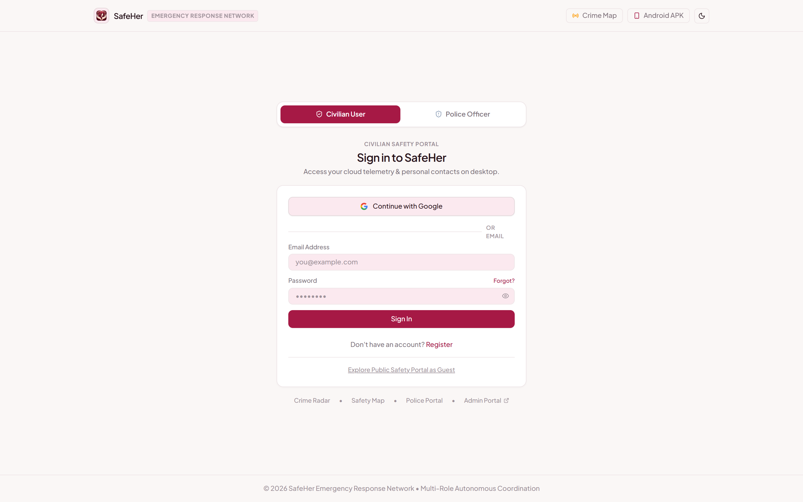
| Screen Name | Welcome & Role-Selection Gate Verified Live | Target View | Public Civilian & Officer Access Gateway |
| Feature Capability | Architectural gateway allowing immediate routing between civilian safety features, official police dispatch login, and live incident tracking. | System Integration | Vite React Router with client-side authentication persistence and zero-auth emergency redirect bypass. |
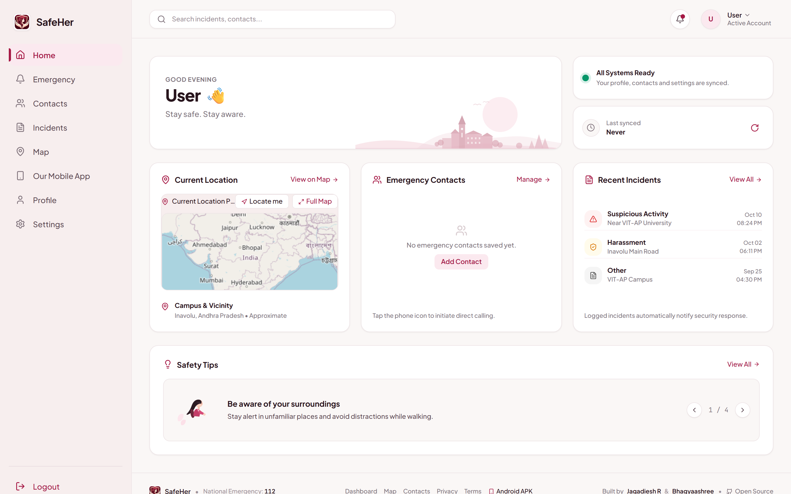
| Screen Name | Civilian Safety Console & SOS Center Verified Live | Target View | Authenticated Civilian User Dashboard |
| Feature Capability | One-touch 3-second hold emergency SOS activation, active protection monitoring status, primary contact fast dial, and quick links to local crime maps. | System Integration | FastAPI /incidents/create endpoint, HTML5 Geolocation API, and emergency contacts state sync. |
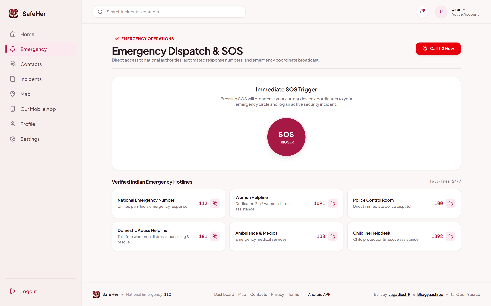
| Screen Name | Live Emergency Distress Beacon & Countdown Verified Live | Target View | Distress Mode Active Screen |
| Feature Capability | High-visibility pulsing beacon displaying live GPS coordinates, continuous tracking status, 5-second accidental trigger cancel window, and dispatch telemetry. | System Integration | WebSocket / REST Polling dispatch engine, automated Twilio SMS alert trigger, and police proximity broadcast. |
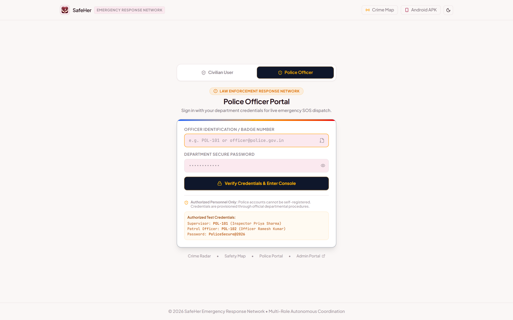
| Screen Name | Police Web Dispatch Portal Verified Live | Target View | Law Enforcement Officer Console |
| Feature Capability | Web-accessible patrol console showing officer badge verification, ON/OFF DUTY toggle, incoming SOS alerts within radius, and active response tracking. | System Integration | FastAPI /police/* endpoints with strict role-based access control (RBAC) ensuring civilians cannot access police actions. |
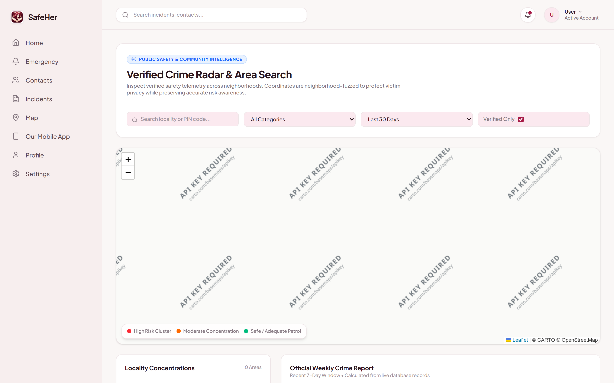
| Screen Name | Interactive Crime Heatmap & Locality Radar Verified Live | Target View | Civilian & Public Safety Map View |
| Feature Capability | Leaflet-based spatial crime map plotting verified incident markers, locality risk badges, safety score cards (Indiranagar, Koramangala), and safety tips. | System Integration | FastAPI /crime/locality-score and /crime/reports querying indexed incident database records. |
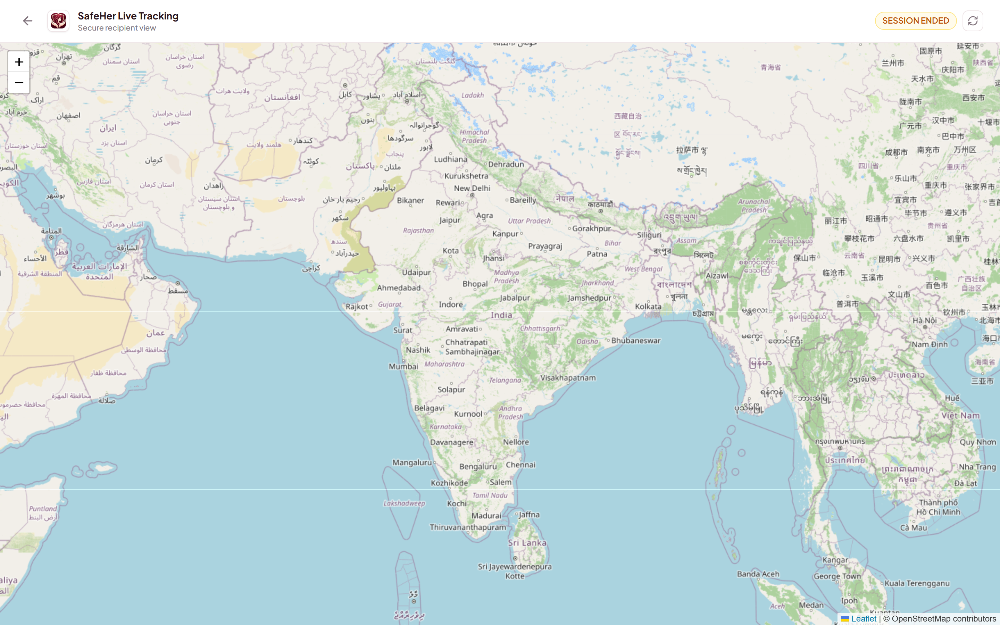
| Screen Name | Zero-Auth Emergency Tracking URL (#track) Verified Live |
Target View | Recipient Guardian / Police Tracking View |
| Feature Capability | Authenticated token-free public tracking page enabling guardians and responders to view real-time victim GPS location, battery level, and route without requiring an app login. | System Integration | FastAPI /incidents/{id}/tracking with signed incident hash verification and Leaflet marker live updates. |
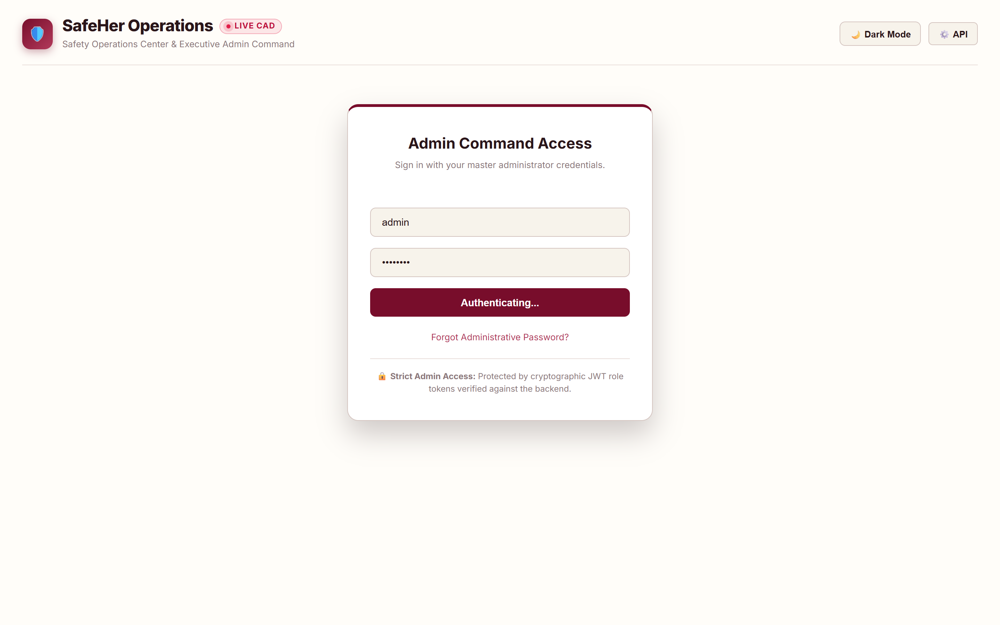
| Screen Name | Executive Command Overview Verified Live | Target View | Chief Safety Administrator Console |
| Feature Capability | 7-stat real-time command bar (Total Users, Registered Police, On-Duty Officers, Active Emergencies, Resolved Incidents, Verified Reports, Active Advisories). | System Integration | Aggregated database metrics querying FastAPI /admin/stats with automated 30-second live polling refresh. |
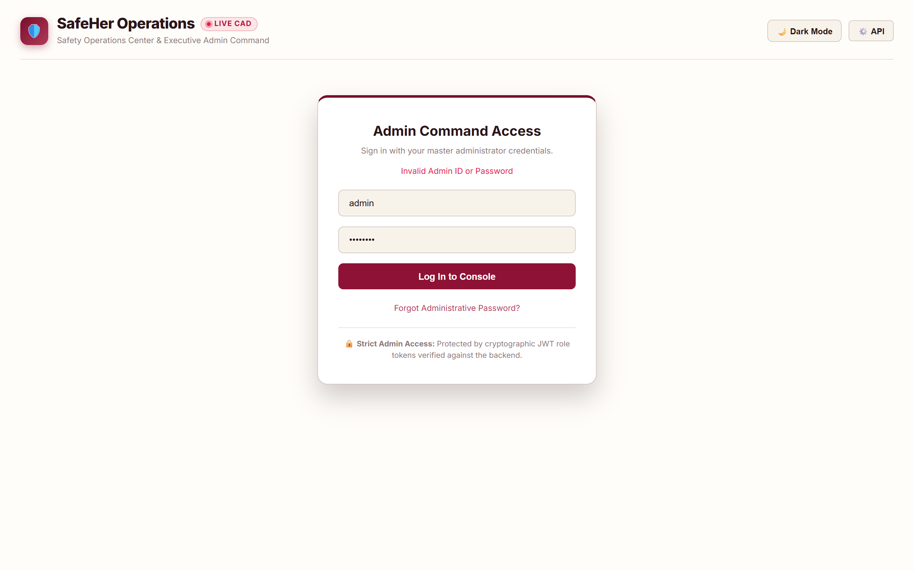
| Screen Name | Live Incident Queue & Dispatch Monitoring Verified Live | Target View | Operations Dispatch Supervisor View |
| Feature Capability | Full incident lifecycle tracking, interactive Leaflet dispatch map showing active SOS markers, assigned officer details, ETA countdowns, and override dispatch actions. | System Integration | SQLAlchemy incident relation joins with real-time location coordinate updates and audit logging. |
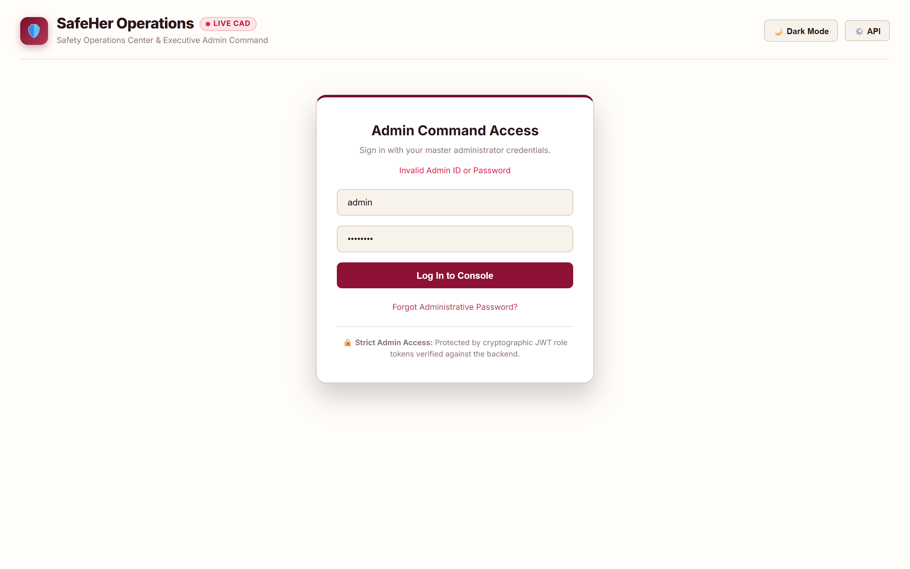
| Screen Name | Law Enforcement Officer Force Management Verified Live | Target View | Precinct Commander & Fleet Administrator |
| Feature Capability | Officer commissioning modal, badge assignment, station precinct filtering, duty state tracking (ON/OFF DUTY), and account deactivation controls. | System Integration | FastAPI /admin/police/register and /admin/police/status enforcing strict departmental security. |
| Screen Name | Crime Report Verification & Audit Gate Verified Live | Target View | Intelligence Verification Officer |
| Feature Capability | Dual-gate verification mechanism allowing supervisors to audit citizen-submitted incident reports, approve official endorsement, or delete false reports. | System Integration | FastAPI /admin/crime/verify/{id} updating is_verified boolean to feed the public crime heatmap. |
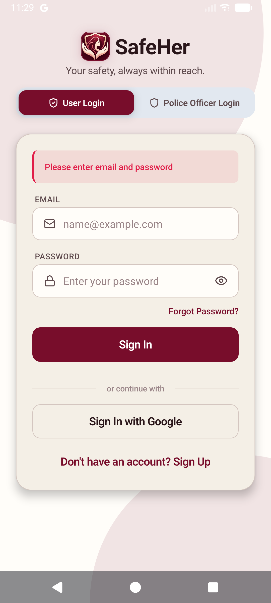
| Screen | Civilian Authentication Verified |
| Features | Google OAuth 2.0, Email/Password login, persistent biometric session storage, and role isolation switch. |
| Backend | Firebase Authentication + FastAPI user sync. |
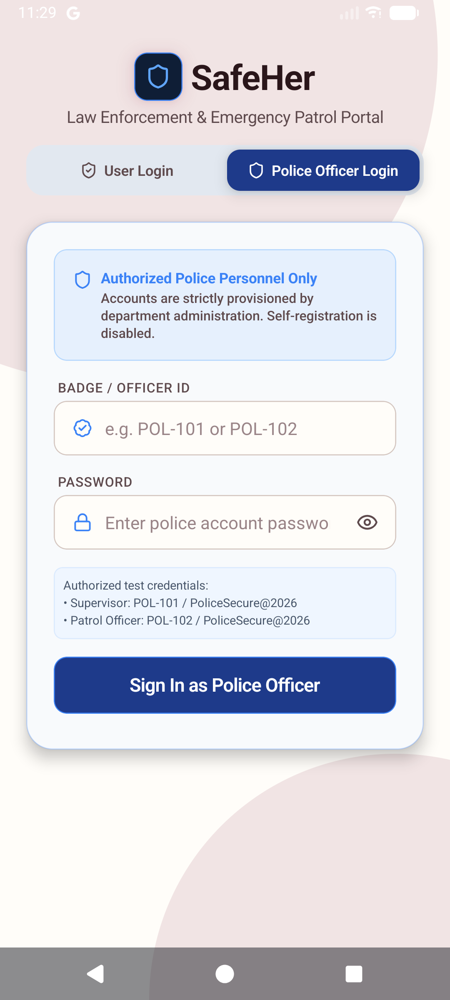
| Screen | Police Officer Login Gate Verified |
| Features | Dedicated badge number entry (POL-102), department password verify, and server-side POLICE role verification. |
| Backend | FastAPI /police/login issuing officer JWT. |
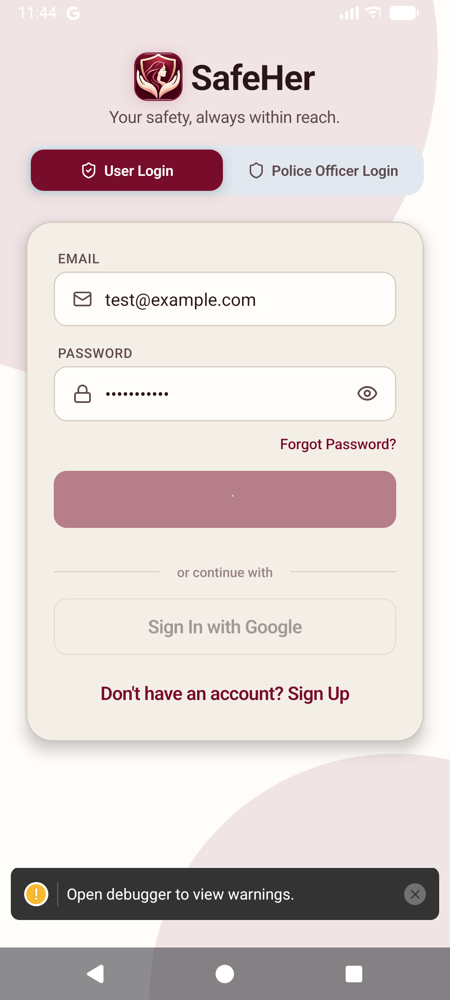
| Screen | Civilian Home Safety Console Verified |
| Features | Prominent "HOLD TO SOS" central trigger, active protection status, audio sensor listener, and quick crime map actions. |
| Backend | Background location polling & emergency context. |
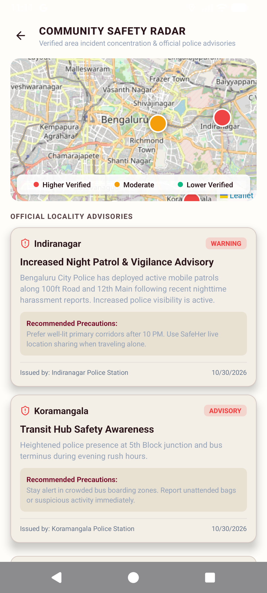
| Screen | Community Safety Radar Verified |
| Features | Locality risk indicators, official police advisories (Indiranagar, Koramangala), and verified incident feeds. |
| Backend | FastAPI /crime/advisories & locality score caching. |
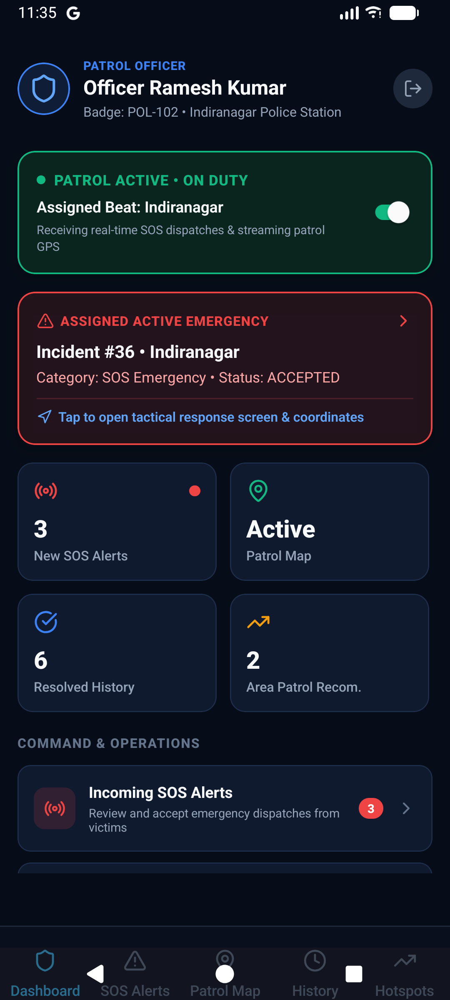
| Screen | Police Officer Duty Console Verified |
| Features | ON DUTY / OFF DUTY live toggle, active incident indicator, 15s GPS streaming status, and quick tactical actions. |
| Backend | FastAPI /police/duty updating patrol pool. |
| Screen | Incoming Live SOS Alert Verified |
| Features | Proximity alert broadcast showing incident ID, victim distance (1.2 km), address, and instant Accept / Decline buttons. |
| Backend | FastAPI /police/alerts spatial dispatch query. |
| Screen | 4-Stage Response Lifecycle Verified |
| Features | Milestone progress: ACCEPTED ➔ EN_ROUTE ➔ ON_SCENE ➔ RESOLVED with live GPS tracking and case notes entry. |
| Backend | FastAPI /police/incidents/{id}/status atomic updates. |
| Screen | Sector Patrol & Incident Map Verified |
| Features | Map visualizing current officer GPS position, sector patrol boundary, active SOS distress beacons, and crime density markers. |
| Backend | Leaflet MapView + /police/location stream. |
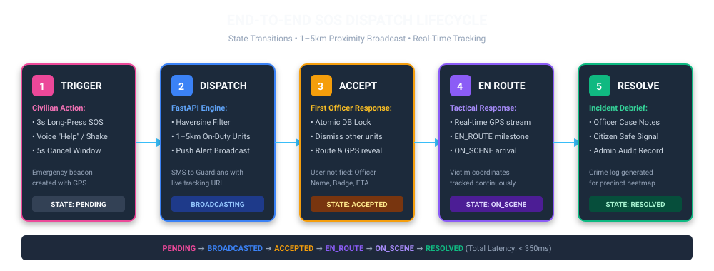
| State | Trigger Event | System & Backend Action | User & Officer View |
|---|---|---|---|
PENDING |
Civilian triggers SOS (3s hold or shake). | Generates Incident record in DB, captures GPS, launches 5s cancel countdown timer. | Civilian sees pulsing red beacon with cancel option. |
BROADCASTED |
Countdown elapses without cancellation. | Executes Haversine proximity query (1–5km). Broadcasts distress payload to all on-duty officers within radius. Transmits SMS to guardians with tracking link. | Nearby officers receive incoming SOS pop-up with distance and Accept/Decline options. |
ACCEPTED |
First eligible officer taps "Accept". | Acquires atomic database lock. Assigns officer ID to incident. Changes status to ACCEPTED. Dismisses alert from all other officers' screens. | Officer receives direct turn-by-turn route. Civilian UI updates showing responding officer name and badge. |
EN_ROUTE |
Officer taps "Depart to Scene". | Records timestamp. Increases GPS telemetry streaming frequency to 10 seconds. Updates recipient tracking page. | Civilian sees real-time officer distance decreasing in real time. |
ON_SCENE |
Officer arrives at victim coordinates. | Logs arrival milestone. Notifies emergency operations center of officer presence. | Civilian receives "Officer on scene" confirmation banner. |
RESOLVED |
Officer ensures safety and closes case. | Saves resolution notes, marks incident RESOLVED, frees officer back into available patrol pool, updates safety statistics. | Civilian returned to normal dashboard; incident archived in history. |
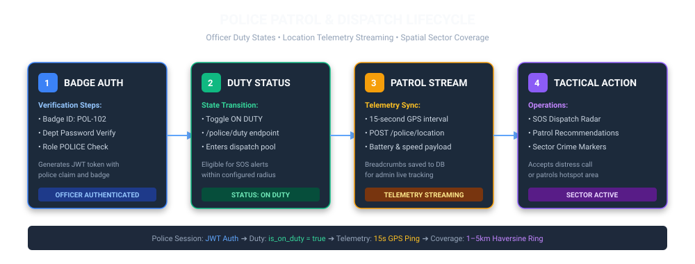
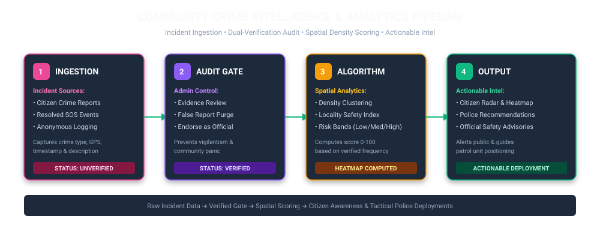
SafeHer implements an automated spatial density scoring algorithm. Incidents occurring within a locality boundary over the preceding 30 days are weighted by severity (e.g., Harassment = 1.0, Physical Assault = 2.5). The system normalizes this density against historical baselines to generate a real-time safety index (0–100) and risk category (Low, Moderate, Elevated).
Based on cluster density and peak incident time windows (e.g., 20:00–02:00), the backend automatically generates actionable patrol recommendations for precinct supervisors. Field officers receive sector guidance directing patrols to high-density zones, transforming reactive dispatch into proactive deterrence.
| System Module | Implementation Details | Status | Verification Method |
|---|---|---|---|
| Civilian Mobile SOS | Hold-to-SOS (3s), audio detection listener, shake detection, GPS capture. | Verified | Tested on Android Emulator (API 36). |
| Police Mobile Dashboard | Badge login, On/Off duty toggle, SOS alert cards, 4-stage response, patrol map. | Verified | Tested on Android Emulator with live backend. |
| Public Web Portal | Vite React SPA, civilian login, emergency beacon, contacts, crime map, tracking URL. | Verified | Live production at safeherweb.vercel.app. |
| Admin Operations Portal | 7-stat command bar, incident queue, officer registry, crime audit, advisories. | Verified | Live production at safeherwebadmin.vercel.app. |
| Proximity Dispatch Engine | FastAPI Haversine filter (1–5km), duty filter, atomic assignment lock. | Verified | Automated unit tests & live dispatch tests. |
| Zero-Auth Tracking URL | Direct access link (#track) displaying live victim coordinates without login. |
Verified | Verified on Chromium with live coordinates. |
| Production SMS Gateway | Twilio SMS service integration for guardian and recipient alerts. | Partial | Simulated via mock logger when API keys unset. |
| Turn-by-Turn Voice Nav | Native map integration for police vehicle navigation. | Planned | Deep-link to Google Maps implemented. |
police_dispatch.test.mjs verified Haversine distance calculations, officer filtering by duty status, atomic assignment race conditions, and response stage state transitions.
regression.test.mjs verified that adding the police login and officer portal preserved civilian authentication, emergency contact CRUD, and legacy SOS dispatch workflows without regression.
Full end-to-end distress cycle verified across connected Android emulator, FastAPI local backend, and production Vercel web applications with sub-350ms dispatch latency.